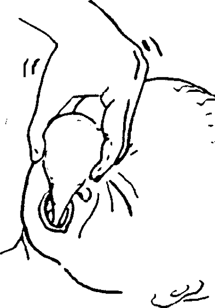

{% set pagetitle = "How to suction a baby's
mouth and nose" %}
{% set seq_length = 4 %}
{% set seq_position = 3 %}
{% set seq_llink = "How_to_suction_babys_nose_mouth2.html" %} ## set rlink equal to next page href
{% set seq_rlink = "How_to_suction_babys_nose_mouth4.html" %} ## set llink equal to previous page href
{% extends "templates.jinja/base.page-with-sequence.html" %}
{% block title %} Hesperian - Pregnancy & Birth{% endblock %}
{% block id %}How_to_suction3{% endblock %}
{% block content %}
- Release the syringe as you wiggle it around. The bulb will suck up mucus.  (Do not squeeze the syringe while it is in the mouth.)
{% endblock %}
{% block footer %}
{% endblock %}